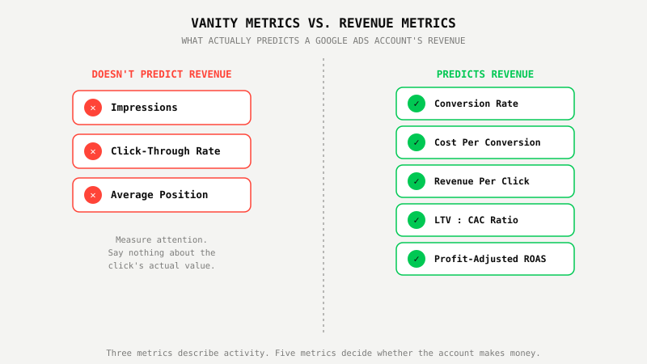
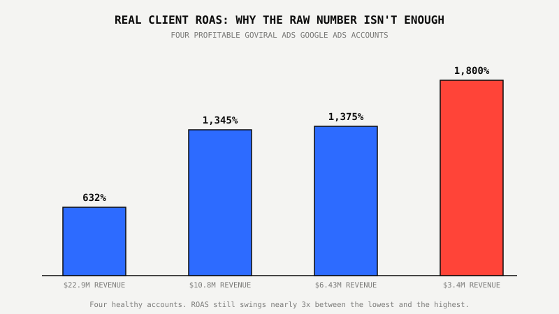

The 5 Google Ads Metrics That Actually Predict Revenue

Key Takeaways
- Five numbers predict Google Ads revenue: conversion rate, cost per conversion, revenue per click, LTV:CAC ratio, and profit-adjusted ROAS. CTR and impressions aren't on the list.
- The average Google Ads conversion rate in 2026 is 8.18%, per WordStream's 2026 Search Advertising Benchmarks, covering more than 13,000 campaigns across 23 industries.
- A widely used LTV:CAC benchmark is 3:1: a customer's lifetime value should run at least three times what it cost to acquire them. Below that, growth is eating margin instead of building it.
- Raw ROAS swings hard by account and margin. Real GoViral client accounts range from 632% ROAS to 1,800% ROAS, which is exactly why ROAS can't be trusted alone.
- Revenue per click, not CTR, is the number that survives a falling click-through rate, because it measures what a click is worth once it lands, not how often someone clicks.
Remember Your Last Physical? The Doctor Ran 40 Tests And Called About Three.
A standard blood panel measures dozens of markers: white cell count, platelet count, a dozen liver enzymes, electrolytes down to the decimal. Almost none of it makes the follow-up call. What gets flagged, almost every time, is the same short list: LDL cholesterol, blood pressure, blood sugar, maybe kidney function. Everything else is context, useful if something's already wrong, but none of it predicts whether you're headed for trouble five years out.
Your Google Ads dashboard runs the same trick. It reports dozens of numbers: impressions, CTR, average position, search impression share, a dozen Quality Score component grades. Almost none of them predict whether the account is making money. Five of them do.
1. Conversion Rate, Not Just Conversions
Conversion rate, not a raw conversion count, is the first number that actually predicts revenue, because it tells you what a click is worth before you know what you spent to get it. A conversion count on its own means nothing without knowing how many clicks it took to get there.
WordStream's 2026 benchmarks put the average Google Ads conversion rate at 8.18%, drawn from more than 13,000 campaigns across 23 industries between April 2025 and March 2026. That's the number to measure your account against, not a round "good enough" guess.
One GoViral-managed account turned 482,000 clicks into 8,930 conversions, a conversion rate of roughly 1.85%, well below the WordStream average. It's still one of the most profitable accounts on the roster, because a low conversion rate isn't automatically a bad one. That's exactly why it can't be read alone, which is where metric #2 comes in.
2. Cost Per Conversion, Weighed Against Margin
Cost per conversion only predicts revenue when it's weighed against what a conversion is actually worth to the business, not against a benchmark borrowed from a different industry.
That 1.85%-conversion-rate account above ran at a controlled $264 per conversion, quarter after quarter, and stayed profitable because the deal size behind each conversion covered it several times over. A separate GoViral account converted at $51.12 per conversion on its way to $6.43M in revenue at 1,375% ROAS. Both numbers are good. Neither one means anything without the deal size sitting next to it.
For context, WordStream's 2026 data puts the average Google Ads cost per lead at $66.69 across all industries, ranging up to $131.63 in attorneys and legal services, the most expensive category tracked. Compare your CPA to your own margin first, the industry number second.

3. Revenue Per Click (RPC)
Revenue per click, total revenue divided by total clicks, is the number that survives a falling CTR, because it measures what a click is worth once it lands instead of how often someone clicks in the first place.
We wrote about this in detail after Seer Interactive's April 2026 study showed paid CTR falling 26% on queries where an AI Overview appears. A shrinking CTR doesn't matter much if RPC holds. What matters is whether the clicks you still get clear your cost per click by a wide enough margin. WordStream's 2026 average CPC sits at $5.42. If your RPC isn't several multiples of whatever you're paying per click, the account isn't sustainable no matter how good the CTR chart looks.
4. LTV:CAC Ratio
The ratio between a customer's lifetime value and what it cost to acquire them is the metric that tells you whether growth is building the business or quietly draining it.
The widely used benchmark is 3:1: lifetime value at least three times acquisition cost. Below that, spend is usually eating margin as it scales, even while revenue climbs. Above roughly 5:1, the business is probably underspending and leaving growth on the table. We say it plainly on our own site: "CTR and impressions don't pay salaries. The only numbers we care about: revenue, profit, CAC, LTV and ROAS." LTV:CAC is where CAC and LTV actually meet.
5. Profit-Adjusted ROAS, Not Raw ROAS
Raw ROAS varies too much by account and margin to trust on its own, which is exactly why it needs to be adjusted for actual profit before it means anything.
Four real GoViral Google Ads accounts: 632% ROAS on $22.9M in revenue, 1,345% ROAS on $10.8M, 1,375% ROAS on $6.43M, and 1,800% ROAS on $3.4M. Four healthy, profitable accounts, and the raw ROAS number swings nearly 3x between the lowest and the highest. Product margin, average order value, and return rate all move that number independent of how well the campaigns are actually run.

Profit-adjusted ROAS strips the conversion-value pixel report down to what the business actually keeps. It's the only version of ROAS worth reporting to whoever signs the ad budget.
What Smart Businesses Are Doing About It
They stop reporting CTR and impressions as if those numbers mean something on their own, and they start pulling these five into one view every week: conversion rate against benchmark, CPA against margin, RPC against CPC, LTV:CAC ratio, and profit-adjusted ROAS. None of it works without clean conversion tracking underneath it. The best-looking ROAS dashboard is worthless if the pixel is over-counting or under-counting what actually happened.
That's the first thing we check in every Google Ads Proof Program™ engagement, before touching a single bid or budget.
Not sure which of these five numbers your current account is actually failing on? We'll tell you, free.
See The $800 Google Ads Proof Program™ ↗